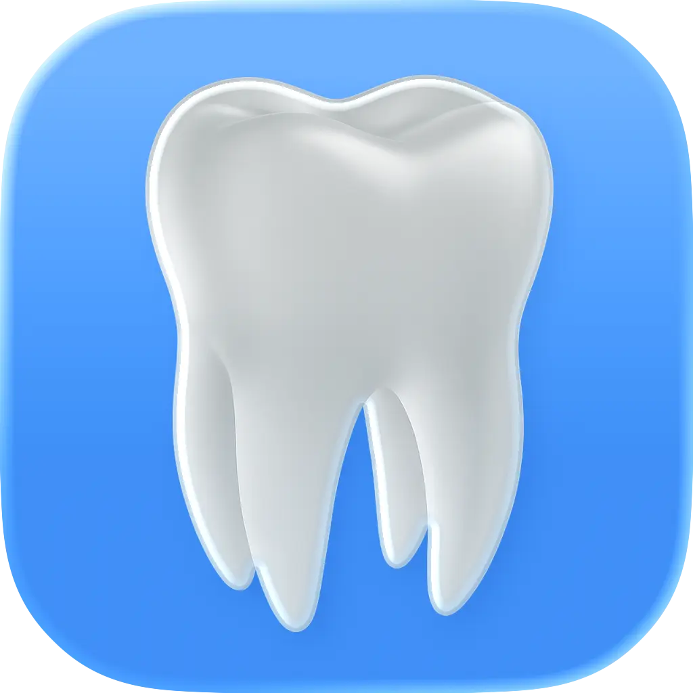
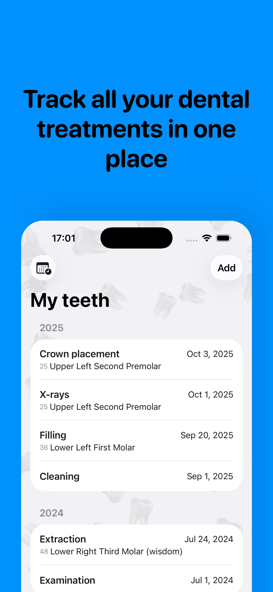
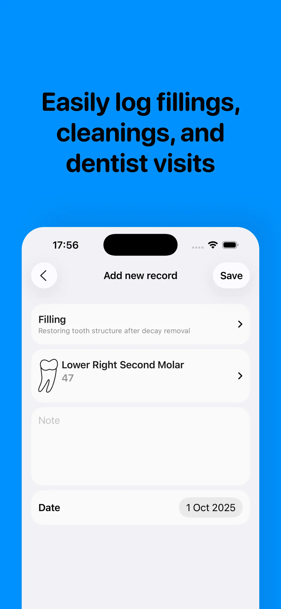
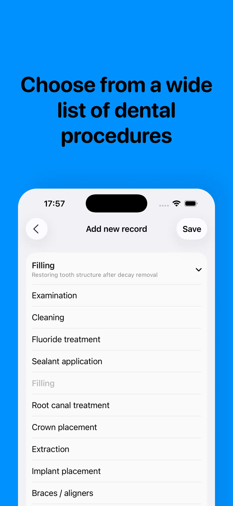
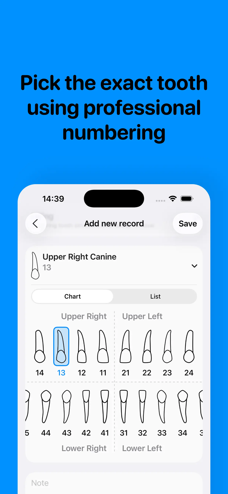
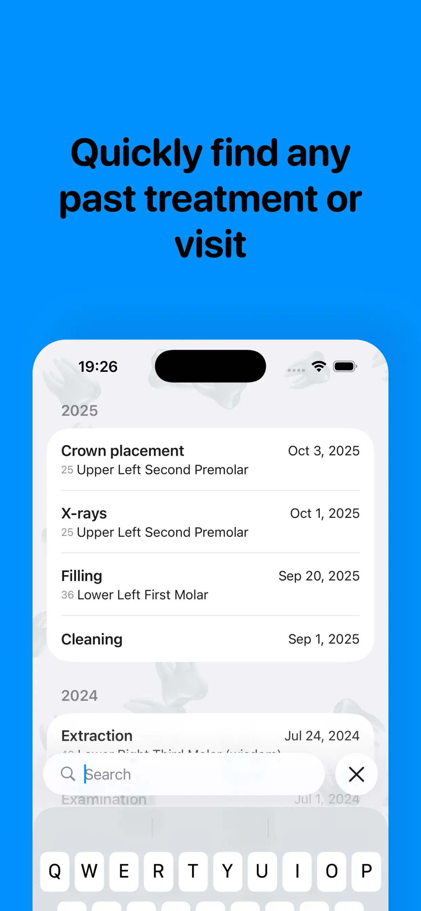

Track your dental journey with ease.
Record appointments, procedures, and maintain a complete history of your oral health — all in one place.
Get the AppTeeth helps you keep a clear record of dentist visits, procedures, affected teeth, and follow-up reminders, so your dental history stays easy to review whenever you need it.
Whether you want to remember when a filling was done, check which tooth was treated, or keep personal records ready for your next appointment, the app keeps everything in one simple timeline on your iPhone.





Teeth is an iPhone app designed to help you track dental appointments, procedures, treatments, and your complete oral health history in one convenient place.
Yes, Teeth - Dental Journal is free to download and use. You can keep your dental history organized without subscription fees.
You can record dentist visits, procedures performed, the teeth involved, treatment notes, dates of service, and other details related to your oral health care.
Yes. Your privacy is a priority. Your dental data is stored on your device, and we do not collect, share, or sell your personal dental information.
Yes, the app includes reminders to help you stay on top of appointments and routine checkups, so important visits are easier to remember.
Teeth - Dental Journal requires iOS 18.0 or later for the best experience.